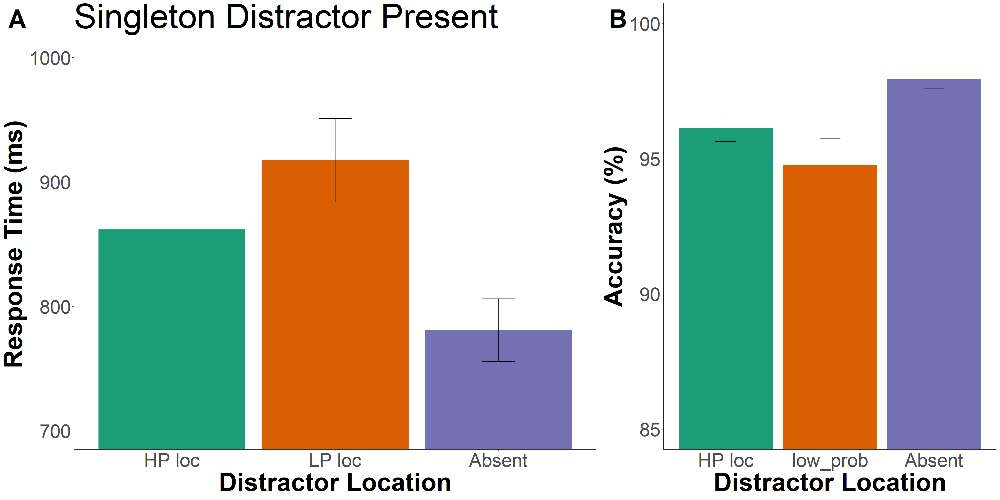
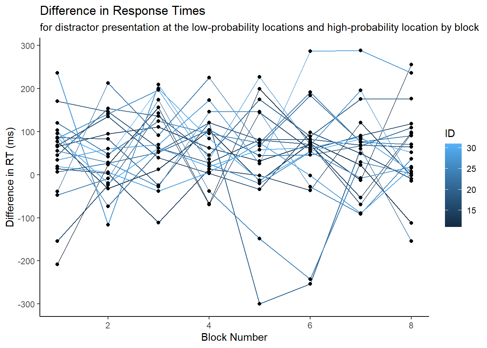

Portfolio 1 - Distractor Suppression Pilot Study
1.21.2023
library(tidyverse)
library(tidyr)
library(rstatix)
library(data.table)
library(afex)
library(emmeans)
library(psych)
library(ggprism)
library(patchwork)
library(magrittr)
library(cowplot)The data used is from a visual search task in which participants are searching for a unique item in an array of six items and press a button to indicate whether the item is facing right or left. On 50% of trials, a salient, color distractor is present in the array. On 67% of distractor present trials, the distractor appears in the same location in the array with an equal number of trials in the other 5 locations. This study is testing whether adults can learn to suppress their attention to the high-probabilty location of the distractor.
The goal of this portfolio piece was to examine the distractor location effect on response times with regard to the statistical regularity introduced.
pilot <- read_csv("p01/p01/data/pilot_final.csv", show_col_types = FALSE)## New names:
## • `` -> `...1`Changed the value of column relative_hp_dist and changed RT column to milliseconds. Tried mutate and transform functions to no avail.
pilot$relative_hp_dist[pilot$relative_hp_dist == 10] <- "no_dist"
pilot$relative_hp_dist[pilot$relative_hp_dist == 0] <- "dist_0"
pilot$relative_hp_dist[pilot$relative_hp_dist == 1] <- "dist_1"
pilot$relative_hp_dist[pilot$relative_hp_dist == 2] <- "dist_2"
pilot$relative_hp_dist[pilot$relative_hp_dist == 3] <- "dist_3"
pilot$RT <- pilot$RT *1000Add the block number to each trial because later I’ll examine the block by block differences.
block_num <- rep(c(1,2,3,4,5,6,7,8), each=60, times=21)
pilot <- cbind(pilot, block_num)Trim the Data
Define trimming criteria according to Van Selst and Jolicoeur 1994.
xsize <- c(4, 5, 6, 7, 8, 9, 10, 11, 12, 13, 14, 15, 20,
25, 30, 35, 50, 100)
stds <- c(1.458, 1.68, 1.841, 1.961, 2.05, 2.12, 2.173,
2.22, 2.246, 2.274, 2.31, 2.326, 2.391, 2.41, 2.4305,
2.45, 2.48, 2.5)Trim the data and compute the percent trimmed
trimmed <- pilot[pilot$acc==100, ] %>% group_by(ID, relative_hp_dist) %>%
mutate(sdc = ifelse(length(RT)>=100,2.5,approx(xsize,stds,xout=length(RT))$y), avg = mean(RT), stdev = sd(RT)) %>%
filter(RT <= sdc*stdev+avg & RT >=avg-(sdc*stdev) & RT >=.200) %>%
select(ID, relative_hp_dist, RT, block_num) %>% #keep these columns in the new data frame
as.data.frame()
statPrep <- trimmed %>% group_by(ID, relative_hp_dist) %>% summarise(measurement=mean(RT)) %>% as.data.frame()## `summarise()` has grouped output by 'ID'. You can override using the `.groups`
## argument.100-(nrow(trimmed)/nrow(pilot[pilot$acc==100, ]))*100## [1] 2.5097322.51% of trials were trimmed.
Distractor Location Effects on Response Times
Create new data frame with the mean response times grouped by distractor location relative to the high-probability location and add columns for standard error. Use this data frame for figure 1.
sum_stats <- trimmed%>%
group_by(relative_hp_dist)%>%
summarize(mean_rts=mean(RT),
sd_rt=sd(RT),
n_rt=21,
se=sd_rt/sqrt(n_rt),
upper_limit=mean_rts+se,
lower_limit=mean_rts-se
)
sum_stats## # A tibble: 5 × 7
## relative_hp_dist mean_rts sd_rt n_rt se upper_limit lower_limit
## <chr> <dbl> <dbl> <dbl> <dbl> <dbl> <dbl>
## 1 dist_0 860. 266. 21 58.1 918. 802.
## 2 dist_1 923. 277. 21 60.4 983. 862.
## 3 dist_2 926. 262. 21 57.1 984. 869.
## 4 dist_3 906. 239. 21 52.1 958. 854.
## 5 no_dist 781. 215. 21 46.9 828. 734.This figure displays the mean response times depending on the location of the distractor relative to the high probability location. I chose those particular colors based on Wake Forest’s color scheme.
a<-ggplot(data = sum_stats, aes(x = relative_hp_dist, y = mean_rts)) +
#geom_point()+
geom_bar(stat = "identity", fill="#9E7E38", color='#000000') +
geom_errorbar(aes(ymin=lower_limit, ymax=upper_limit), width=0.2)+
coord_cartesian(ylim = c(700,1050))+
theme_classic()+
labs(x = "Distractor Location", y = "Response Time (ms)")+
labs(title = "Singleton Distractor Present")+
#labs(caption = "An ANOVA test shows a difference in RT depending on distractor location, F(3.28,65.57)=33.3, p<.001.")+
theme(axis.text=element_text(size=14),
axis.title=element_text(size=16,face="bold"),
title = element_text(size = 24))+
scale_x_discrete(labels= c("no_dist"="no-dist","dist_0"="dist-0","dist_1"="dist-1","dist_2"="dist-2","dist_3"="dist-3"))Create a new data frame with the average RT for each relative distractor location per participant, so we can do a repeated measures ANOVA.
space <- trimmed %>%
group_by(ID, relative_hp_dist) %>%
summarize(rts = mean(RT)
)## `summarise()` has grouped output by 'ID'. You can override using the `.groups`
## argument.space## # A tibble: 105 × 3
## # Groups: ID [21]
## ID relative_hp_dist rts
## <dbl> <chr> <dbl>
## 1 11 dist_0 1277.
## 2 11 dist_1 1324.
## 3 11 dist_2 1336.
## 4 11 dist_3 1230.
## 5 11 no_dist 1081.
## 6 12 dist_0 799.
## 7 12 dist_1 841.
## 8 12 dist_2 849.
## 9 12 dist_3 882.
## 10 12 no_dist 732.
## # … with 95 more rowsCreate new data frame for only the first half of trials to test whether the differences between groups is significant when we cut the trials down. We want to do this because we are running this experiment with children ages 6-12 and want to make the experiment as short as possible.
df2 <- subset(trimmed,block_num!='7' )
df2 <- subset(df2,block_num!='8')
df2 <- subset(df2,block_num!='5' )
df2 <- subset(df2,block_num!='6')
space2<- df2 %>%
group_by(ID, relative_hp_dist) %>%
summarize(rts = mean(RT)
)## `summarise()` has grouped output by 'ID'. You can override using the `.groups`
## argument.space2## # A tibble: 105 × 3
## # Groups: ID [21]
## ID relative_hp_dist rts
## <dbl> <chr> <dbl>
## 1 11 dist_0 1367.
## 2 11 dist_1 1373.
## 3 11 dist_2 1463.
## 4 11 dist_3 1228.
## 5 11 no_dist 1184.
## 6 12 dist_0 856.
## 7 12 dist_1 873.
## 8 12 dist_2 889.
## 9 12 dist_3 929.
## 10 12 no_dist 788.
## # … with 95 more rowsTest whether there is a difference between conditions for the first 4 blocks using a repeated measures ANOVA – it is significant F(2.7,54)=25.06, p<.001.
aov_car(rts ~ relative_hp_dist + Error(ID/relative_hp_dist), data=space2)## Anova Table (Type 3 tests)
##
## Response: rts
## Effect df MSE F ges p.value
## 1 relative_hp_dist 2.70, 54.00 5151.56 25.06 *** .112 <.001
## ---
## Signif. codes: 0 '***' 0.001 '**' 0.01 '*' 0.05 '+' 0.1 ' ' 1
##
## Sphericity correction method: GGNeed to reformat the above df to have a column for each relative_hp_dist/ID so we can run tests on the assumptions of ANOVAs.
space_anova <- setDT(space)
space_anova <- dcast(space_anova,ID~relative_hp_dist,value.var='rts')#first identify outliers - not sure what to do with them anyway so overall just ignore? maybe reason enough to get rid of ppt 11?
space %>%
group_by(relative_hp_dist) %>%
identify_outliers(rts)## # A tibble: 8 × 5
## relative_hp_dist ID rts is.outlier is.extreme
## <chr> <dbl> <dbl> <lgl> <lgl>
## 1 dist_0 11 1277. TRUE FALSE
## 2 dist_1 11 1324. TRUE FALSE
## 3 dist_1 28 1258. TRUE FALSE
## 4 dist_3 11 1230. TRUE FALSE
## 5 no_dist 11 1081. TRUE TRUE
## 6 no_dist 20 986. TRUE FALSE
## 7 no_dist 22 904. TRUE FALSE
## 8 no_dist 28 953. TRUE FALSE#testing the normality assumption -- data is not normally distributed because some conditions have a p-value less than .05
space %>%
group_by(relative_hp_dist) %>%
shapiro_test(rts)## # A tibble: 5 × 4
## relative_hp_dist variable statistic p
## <chr> <chr> <dbl> <dbl>
## 1 dist_0 rts 0.901 0.0362
## 2 dist_1 rts 0.876 0.0125
## 3 dist_2 rts 0.910 0.0557
## 4 dist_3 rts 0.939 0.205
## 5 no_dist rts 0.887 0.0194Assumption of sphericity is automatically checked during the ANOVA test. Next, we using 3 different ways to run an ANOVA test – . The ANOVA shows a significant difference among distractor locations, F(3.28,65.57)=33.3, p<.001. The 3 different methods used to run the ANOVA all gave significant results, but we’ll go with the last test because it best takes into account the type of data we are using.
res.aov <- anova_test(data = space, dv = rts, wid = ID, within = relative_hp_dist)
get_anova_table(res.aov)## ANOVA Table (type III tests)
##
## Effect DFn DFd F p p<.05 ges
## 1 relative_hp_dist 4 80 33.3 2.44e-16 * 0.12model = aov(rts~factor(relative_hp_dist)+
Error(factor(ID)), data=space)
summary(model)##
## Error: factor(ID)
## Df Sum Sq Mean Sq F value Pr(>F)
## Residuals 20 2064016 103201
##
## Error: Within
## Df Sum Sq Mean Sq F value Pr(>F)
## factor(relative_hp_dist) 4 306342 76586 33.3 2.44e-16 ***
## Residuals 80 183990 2300
## ---
## Signif. codes: 0 '***' 0.001 '**' 0.01 '*' 0.05 '.' 0.1 ' ' 1model2 <- aov_car(rts ~ relative_hp_dist + Error(ID/relative_hp_dist), data=space)
model2## Anova Table (Type 3 tests)
##
## Response: rts
## Effect df MSE F ges p.value
## 1 relative_hp_dist 3.28, 65.57 2806.06 33.30 *** .120 <.001
## ---
## Signif. codes: 0 '***' 0.001 '**' 0.01 '*' 0.05 '+' 0.1 ' ' 1
##
## Sphericity correction method: GGTest whether the high-prob location and the average across low-prob locations were significantly different. Using a paired samples t-test, I found that the response times for when the distractor was presented in the high-probability location compared to the average response time across the low-probability locations was significantly different (t(20)=4.95, p<.001). I also examined whether there were significant differences between the high-prob and distractor absent conditions and th elow-prob and distractor absent conditions, using paired samples t-tests. All were significantly different with a p of <.001.
space_anova <- space_anova %>%
mutate(low_prob = (dist_1+dist_2+dist_3)/3)space_anova %>%
t.test(x=space_anova$low_prob, y=space_anova$dist_0, alternative="greater", mu=0,paired = TRUE, conf.level = .95) ##
## Paired t-test
##
## data: space_anova$low_prob and space_anova$dist_0
## t = 4.9458, df = 20, p-value = 3.893e-05
## alternative hypothesis: true mean difference is greater than 0
## 95 percent confidence interval:
## 36.23139 Inf
## sample estimates:
## mean difference
## 55.63165space_anova%>%
t.test(x=space_anova$dist_0, y=space_anova$no_dist, alternative="greater", mu=0, paired =TRUE, conf.level = .95) ##
## Paired t-test
##
## data: space_anova$dist_0 and space_anova$no_dist
## t = 7.0068, df = 20, p-value = 4.239e-07
## alternative hypothesis: true mean difference is greater than 0
## 95 percent confidence interval:
## 61.06419 Inf
## sample estimates:
## mean difference
## 81.00314space_anova%>%
t.test(x=space_anova$low_prob, y=space_anova$no_dist, alternative="greater", mu=0, paired =TRUE, conf.level = .95)##
## Paired t-test
##
## data: space_anova$low_prob and space_anova$no_dist
## t = 10.921, df = 20, p-value = 3.523e-10
## alternative hypothesis: true mean difference is greater than 0
## 95 percent confidence interval:
## 115.0573 Inf
## sample estimates:
## mean difference
## 136.6348Now, I want to create a smaller graph with just 3 bars: one for the high-probability rts, average of low-probability rts, and no distractor.
df_mod <- subset(space_anova, select=c(ID, no_dist, dist_0, low_prob))
df_mod <- reshape2::melt(df_mod, id.var=c('ID'), variable.name= "relative_hp_dist")sum_stats2 <- df_mod%>%
group_by(relative_hp_dist)%>%
summarize(mean_rts=mean(value),
sd_rt=sd(value),
n_rt=21,
se=sd_rt/sqrt(n_rt),
upper_limit=mean_rts+se,
lower_limit=mean_rts-se
)
sum_stats2## # A tibble: 3 × 7
## relative_hp_dist mean_rts sd_rt n_rt se upper_limit lower_limit
## <fct> <dbl> <dbl> <dbl> <dbl> <dbl> <dbl>
## 1 no_dist 781. 115. 21 25.2 806. 756.
## 2 dist_0 862. 153. 21 33.4 895. 828.
## 3 low_prob 917. 153. 21 33.5 951. 884.In order to add the p-values to the graph, I needed to create data frames fo reach value and specify the position on the graph; then, use add_pvalue with ggplot.
result<- .001
#Make df for adding the p-value
p_val1<- data.frame(
group_1="dist_0",
group_2="low_prob",
label=result,
y.position=1050
)
p_val2<- data.frame(
group_1="no_dist",
group_2="low_prob",
label=result,
y.position=1150
)
p_val3<- data.frame(
group_1="no_dist",
group_2="dist_0",
label=result,
y.position=950
)This figure displays the mean response times depending on the location of the distractor relative to the high probability location. I chose those particular colors based on Wake Forest’s color scheme.
ggplot(data = sum_stats2, aes(x = relative_hp_dist, y = mean_rts)) +
geom_bar(stat = "identity", fill="#9E7E38", color='#000000') +
geom_errorbar(aes(ymin=lower_limit, ymax=upper_limit), width=0.2)+
coord_cartesian(ylim = c(700,1200))+
theme_classic()+
add_pvalue(p_val1,
xmin = "group_1",
xmax = "group_2",
label = "p < {label}",
y.position = "y.position",
label.size = 4,
bracket.size = .5)+
add_pvalue(p_val2,
xmin = "group_1",
xmax = "group_2",
label = "p < {label}",
y.position = "y.position",
label.size = 4,
bracket.size = .5)+
add_pvalue(p_val3,
xmin = "group_1",
xmax = "group_2",
label = "p < {label}",
y.position = "y.position",
label.size = 4,
bracket.size = .5)+
labs(x = "Distractor Location", y = "Response Time (ms)")+
labs(title = "Distractor Location Effect on RT")+
#labs(caption = "An ANOVA test shows a difference in RT depending on distractor location, F(1.97,39.33)=67.98, p<.001.")+
theme(axis.text=element_text(size=12),
axis.title=element_text(size=18,face="bold"),
title = element_text(size = 20))+
scale_x_discrete(labels= c("no_dist"="Distractor Absent","low_prob"="Low Prob Location", "dist_0"="High Prob Location"))
One last ANOVA test on this subset of data.
model3 <- aov_car(value ~ relative_hp_dist + Error(ID/relative_hp_dist), data=df_mod)
model3## Anova Table (Type 3 tests)
##
## Response: value
## Effect df MSE F ges p.value
## 1 relative_hp_dist 1.97, 39.33 1483.18 67.98 *** .141 <.001
## ---
## Signif. codes: 0 '***' 0.001 '**' 0.01 '*' 0.05 '+' 0.1 ' ' 1
##
## Sphericity correction method: GGCombine graphs of rt and accuracy for NC Cog Poster.
pilot_distacc <- pilot %>%
group_by(relative_hp_dist) %>%
summarize(accuracy = mean(acc),
sd_rt=sd(acc),
n_rt=21,
se=sd_rt/sqrt(n_rt),
upper_limit=accuracy+se,
lower_limit=accuracy-se
)
b<-ggplot(data = pilot_distacc, aes(x = relative_hp_dist, y = accuracy)) +
geom_bar(stat = "identity", fill="#9E7E38", color='#000000') +
geom_errorbar(aes(ymin=lower_limit, ymax=upper_limit), width=0.2)+
coord_cartesian(ylim = c(85,105))+
theme_classic()+
labs(x = "Distractor Location", y = "Accuracy (%)")+
#labs(title = "Distractor Location Effect on Accuracy")+
theme(axis.text=element_text(size=14),
axis.title=element_text(size=16,face="bold"),
title = element_text(size = 16))+
scale_x_discrete(labels= c("no_dist"="no-dist","dist_0"="dist-0","dist_1"="dist-1","dist_2"="dist-2","dist_3"="dist-3"))plot_grid(a,b,labels = c('A','B'), label_size=16, rel_widths = c(2,1))
Examine block-by-block learning of distractor location
The goal of this section is to examine individual blocks of trials for learning. I’ll be taking the difference between response times when the distractor is presented in the low probability locations and response times when the distractor is presented in the high probability location in each block to see roughly how quickly individuals are learning the regularity.
space_block <- trimmed %>%
group_by(ID, block_num, relative_hp_dist) %>%
summarize(rts = mean(RT),
)## `summarise()` has grouped output by 'ID', 'block_num'. You can override using
## the `.groups` argument.space_block## # A tibble: 837 × 4
## # Groups: ID, block_num [168]
## ID block_num relative_hp_dist rts
## <dbl> <dbl> <chr> <dbl>
## 1 11 1 dist_0 1552.
## 2 11 1 dist_1 1361.
## 3 11 1 dist_2 1557.
## 4 11 1 dist_3 1113.
## 5 11 1 no_dist 1317.
## 6 11 2 dist_0 1405.
## 7 11 2 dist_1 1400.
## 8 11 2 dist_2 1555.
## 9 11 2 dist_3 1329.
## 10 11 2 no_dist 1127.
## # … with 827 more rowsspace_block <- setDT(space_block)
space_block <- dcast(space_block,ID+block_num~relative_hp_dist,value.var='rts')Below, I added the average rt for the low probability locations and the difference between the low probability and high probability locations ignoring n/a values.
space_block <- space_block %>%
mutate(low_prob = rowMeans(select(space_block, c(dist_1,dist_2,dist_3)),na.rm=TRUE)) %>%
mutate(difference = (low_prob-dist_0))ggplot(data = space_block,aes(x=block_num, y=difference, group=ID))+
geom_line(aes(color=ID))+
geom_point()+
labs(title = "Difference in Response Times", subtitle = "for distractor presentation at the low-probability locations and high-probability location by block")+
theme_classic()+
labs(x = "Block Number", y = "Difference in RT (ms)")
Positive differences indicate that participants were faster when the distractor was presented in the high probability location compared to when it was presented in the low probability locations. The average across all participants is plotted below. These results indicate that the individuals are learning within the first block where the distractor is likely to appear.
space2 <- space_block %>%
group_by(block_num) %>%
summarize(rts = mean(difference, na.rm = TRUE),
sd_rt=sd(difference, na.rm = TRUE),
n_rt=21,
se=sd_rt/sqrt(n_rt),
upper_limit=rts+se,
lower_limit=rts-se
)ggplot(data = space2,aes(x=block_num, y=rts))+
geom_line()+
geom_point()+
geom_errorbar(aes(ymin=lower_limit, ymax=upper_limit), width=0.2)+
labs(title = "Average Difference in Response Times By Block", subtitle = "for distractor presentation at the low-probability locations and high-probability location", x="Block number", y="Difference in RT (ms)")